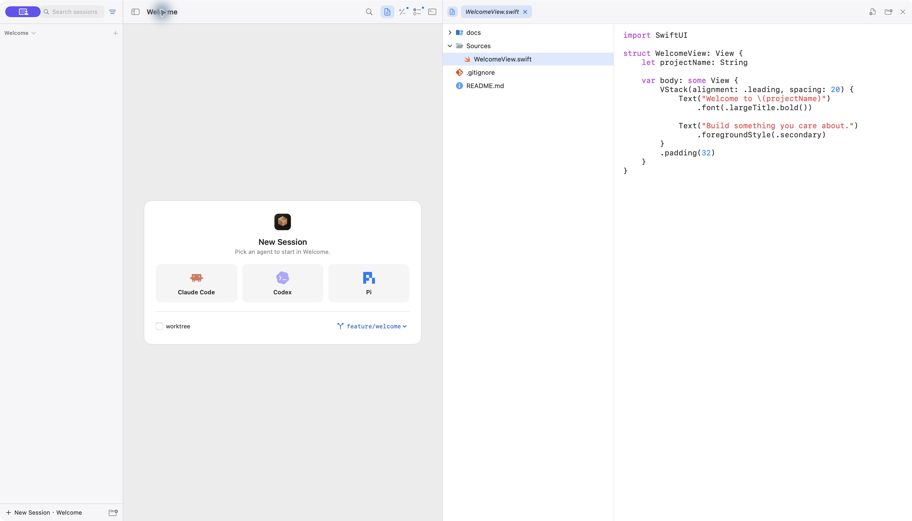
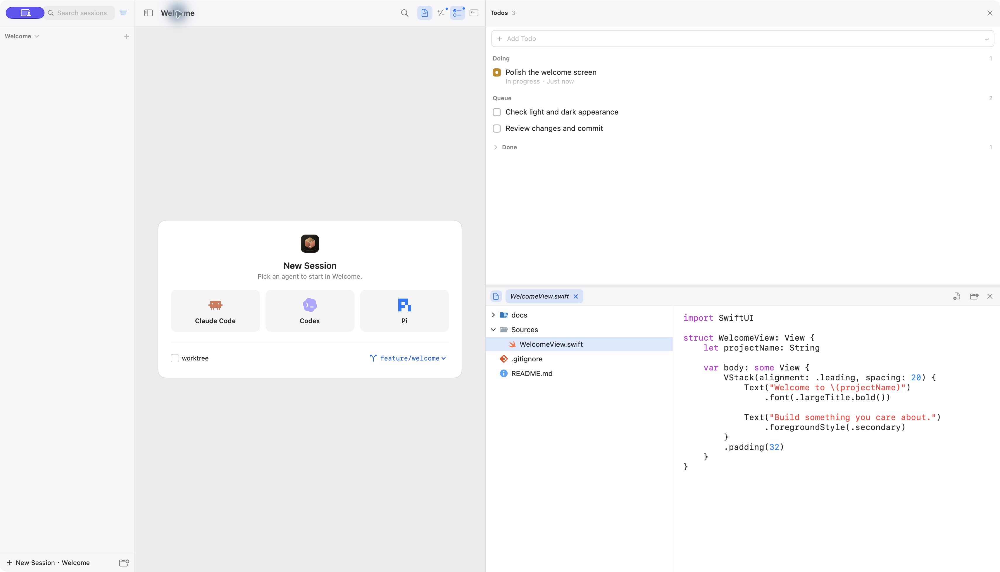

Coding agents,
side by side.
Tandock is a native Mac workspace for Claude Code, Codex, Pi, or any CLI. Each agent gets a real terminal, with your files, Git changes, and todos one keystroke away.
macOS 14 or later, Apple Silicon and Intel. Free and open source under MIT.
› Ready for a task
› Ready for a task
› Ready for a task
› Ready for a task
Bring the CLI you already use
claudeClaude CodecodexCodexpiPiyour-cliAdd any command in Settings
Tandock doesn't bundle a model or a subscription. Install and sign in to each CLI the way you normally would.
The whole workspace in 53 seconds
Launching agents, arranging sessions, reading code, reviewing changes, sharing todos, and the keyboard shortcuts that tie it together.
Context without leaving the terminal
Open a panel beside your sessions, use it, and close it again. The same shortcuts work in the app.
Read the code your agent is touching.
Browse the file tree, preview Markdown, SVG, and images, and save small edits with ⌘S.
Built for reading and light edits. There's no LSP or go-to-definition.


From folder to first session
- ⌘O
Open a project
Pick any local folder. Choose a Git repository to review and commit changes.
- ⌘N
Start a session
Choose Claude Code, Codex, Pi, or a custom CLI. Add Pi and others in Settings → Agents.
- ⌘K
Find anything
Search sessions, todos, history, and actions from one palette.
Questions before you download
Which Macs are supported?
Tandock runs on macOS 14 or later. Release builds support both Apple Silicon and Intel Macs. Download the ZIP, unzip it, and drag Tandock into Applications.
Does Tandock include an AI subscription?
No. Tandock is free and open source under the MIT license. Install and sign in to your own agent CLI; model access and charges are handled by that provider.
Is this a full code editor?
The editor is for viewing files, basic syntax highlighting, and small manual edits. It also previews Markdown, SVG, and images. LSP, semantic diagnostics, and go-to-definition are not included.
Can I isolate sessions with worktrees?
Worktree isolation is not connected in the native app yet, even though the session picker shows the option. Use regular project sessions for now.
Does it support dark mode and Chinese?
Yes. The app has English and Chinese interfaces, plus light, dark, and system appearance. Screenshots show version 0.7.0 before the rename, with the English interface and sample project data.
Can I build it myself?
Yes. You'll need Xcode with a Swift 6 toolchain, macOS 14 or later, and Git. Clone the repository, then run:
git clone https://github.com/melon95/YCode.git Tandock
cd Tandock/macos
swift test
scripts/build_and_run.sh runGive your agents a proper workspace.
Download for macOSmacOS 14 or later. Free and open source.